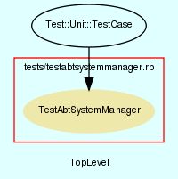

|  |
testabtsystemmanager.rb
Unit testing for AbtSystemManager class.
Created by Eric D. Schabell <erics@abtlinux.org> Copyright 2006, GPL.
This file is part of AbTLinux.
AbTLinux is free software; you can redistribute it and/or modify it under the terms of the GNU General Public License as published by the Free Software Foundation; either version 2 of the License, or (at your option) any later version.
AbTLinux is distributed in the hope that it will be useful, but WITHOUT ANY WARRANTY; without even the implied warranty of MERCHANTABILITY or FITNESS FOR A PARTICULAR PURPOSE. See the GNU General Public License for more details.
You should have received a copy of the GNU General Public License along with AbTLinux; if not, write to the Free Software Foundation, Inc., 51 Franklin St, Fifth Floor, Boston, MA 02110-1301 USA
- setup
- teardown
- test_cleanup_package_sources
- test_fix_package
- test_package_installed
- test_set_central_repo
- test_set_package_tree_location
- test_verify_installed_files
- test_verify_package_depends
- test_verify_package_integrity
- test_verify_symlinks
setup method for testing AbtSystemManager.
[ show source ]
# File testabtsystemmanager.rb, line 36
36: def setup
37: @system = AbtSystemManager.new
38: @manager = AbtPackageManager.new
39:
40: # ensure tarball availabe without downloading.
41: FileUtils.cp( "#{$PACKAGE_PATH}/ipc-1.4.tar.gz", "#{$SOURCES_REPOSITORY}", :verbose => true ) if !File.exist?( "#{$SOURCES_REPOSITORY}/ipc-1.4.tar.gz" )
42: end
teardown method to cleanup after testing.
[ show source ]
# File testabtsystemmanager.rb, line 47
47: def teardown
48: end
Test method for ‘AbtSystemManager.test_cleanup_package_sources()’
[ show source ]
# File testabtsystemmanager.rb, line 53
53: def test_cleanup_package_sources
54: # remove test package so that sources can be removed.
55: if @system.package_installed( "ipc" )
56: @manager.remove_package( "ipc" )
57: end
58:
59: # ensure tarball availabe without downloading.
60: FileUtils.cp( "#{$PACKAGE_PATH}/ipc-1.4.tar.gz", "#{$SOURCES_REPOSITORY}", :verbose => true ) if !File.exist?( "#{$SOURCES_REPOSITORY}/ipc-1.4.tar.gz" )
61:
62: assert( @system.cleanup_package_sources(), "test_cleanup_package_sources()" )
63: end
Test method for ‘AbtSystemManager.test_fix_package()’
[ show source ]
# File testabtsystemmanager.rb, line 105
105: def test_fix_package
106: assert( @system.fix_package( "dummy" ), "test_fix_package()" )
107: end
Test method for ‘AbtSystemManager.test_package_installed()’
[ show source ]
# File testabtsystemmanager.rb, line 126
126: def test_package_installed
127: if !@system.package_installed( "ipc" )
128: @manager.install_package( "ipc" )
129: end
130:
131: assert( @system.package_installed( "ipc" ), "test_package_installed()" )
132: end
Test method for ‘AbtSystemManager.test_set_central_repo()’
[ show source ]
# File testabtsystemmanager.rb, line 112
112: def test_set_central_repo
113: assert( @system.set_central_repo( "http://localhost" ), "test_set_central_repo()" )
114: end
Test method for ‘AbtSystemManager.test_set_package_tree_location()’
[ show source ]
# File testabtsystemmanager.rb, line 119
119: def test_set_package_tree_location
120: assert( @system.set_package_tree_location( "/var/lib/ericsPackages" ), "test_set_package_tree_location()" )
121: end
Test method for ‘AbtSystemManager.test_verify_installed_files()’
[ show source ]
# File testabtsystemmanager.rb, line 68
68: def test_verify_installed_files
69: # ensure test package installed.
70: if !@system.package_installed( "ipc" )
71: @manager.install_package( "ipc" )
72: end
73:
74: assert( @system.verify_installed_files( "ipc" ), "test_verify_installed_files()" )
75: end
Test method for ‘AbtSystemManager.test_verify_package_depends()’
[ show source ]
# File testabtsystemmanager.rb, line 87
87: def test_verify_package_depends
88: assert( @system.verify_package_depends( "dummy" ), "test_verify_package_depends()" )
89: end
Test method for ‘AbtSystemManager.test_verify_package_integrity()’
[ show source ]
# File testabtsystemmanager.rb, line 94
94: def test_verify_package_integrity
95: if !@system.package_installed( "ipc" )
96: @manager.install_package( "ipc" )
97: end
98:
99: assert( @system.verify_package_integrity( "ipc" ), "test_verify_package_integrity()" )
100: end
Test method for ‘AbtSystemManager.test_verify_symlinks()’
[ show source ]
# File testabtsystemmanager.rb, line 80
80: def test_verify_symlinks
81: assert( @system.verify_symlinks( "dummy" ), "test_verify_symlinks()" )
82: end